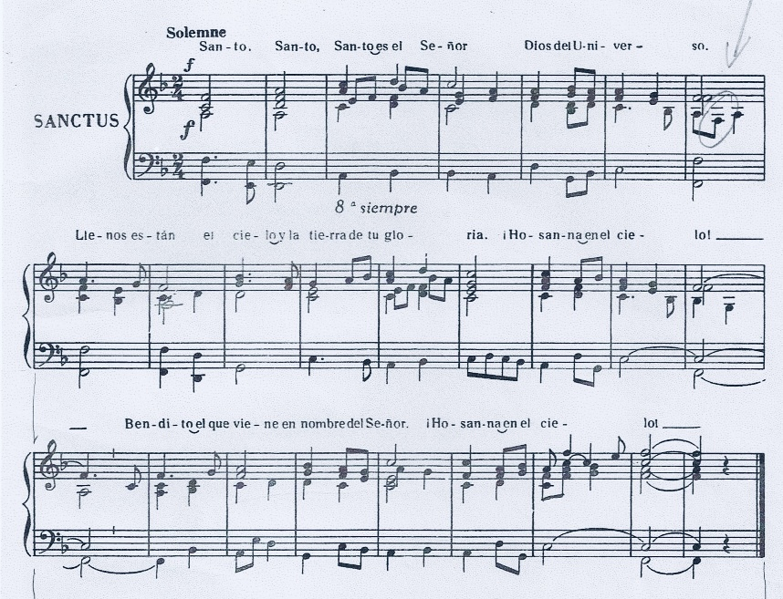

DO LAm MIm FA DO
Santo, Santo, Santo es el Señor
LAm DO-SOL-DO
Dios del universo.
DO LAm REm SOL
Llenos están el cielo y la tierra
MIm-FA -SOL
de Tu Gloria.
DO SOL-DO
Hosanna en el cielo.
DO REm MIm
Bendito el que viene en nombre del Señor.
DO SOL-DO
Hosanna en el cielo.
Partitura en FA
